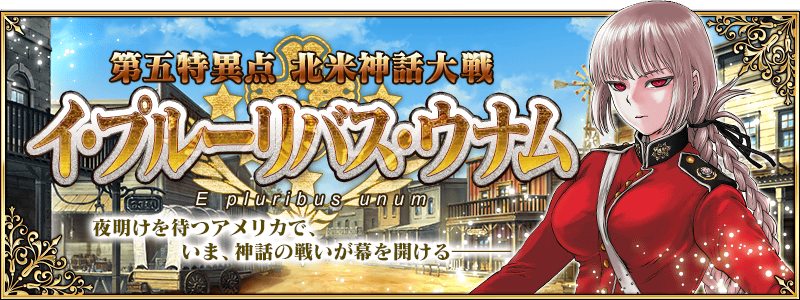
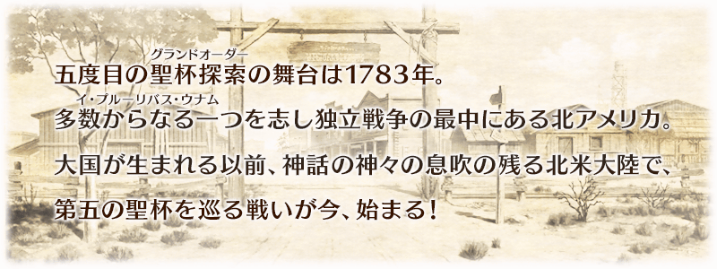
◆公開時間◆
2016年3月30日（三）18:00～
◆概要◆
「第五特異點 北美神話大戰 合眾為一」。舞台是沙塵飛舞的大地。與新登場的Servant們展開緊張刺激的戰鬥。
◆開放條件◆
通過「第四特異點 死界魔霧都市 倫敦」後開放。
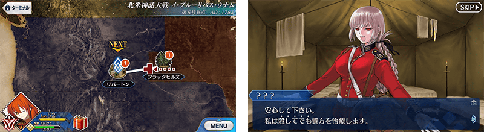
今後為了遊戲剛起步的玩家，遊戲開始後，在教學中進行的聖晶石召喚大幅翻新！
教學能進行的召喚次數從現在的1次增加為10次。
還有，此10次召喚有確定★4(SR)Servant1位。
更加，也確定★4(SR)概念禮裝1張。
藉此機會試著呼朋引伴如何？
※請注意在翻新前開始遊戲，還沒到達教學召喚就迎來此次翻新的話，會是適用更新前的教學召喚。
召喚對象的★4(SR)Servant如下。
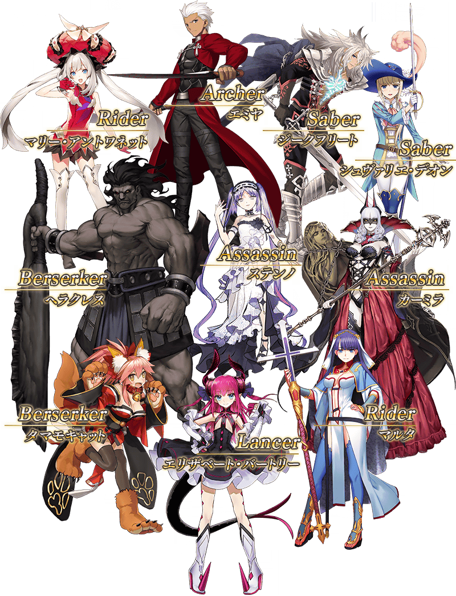

為紀念教學召喚的翻新，贈送翻新前開始遊戲的各位10個聖晶石。
◆對象者◆
2016年3月30日(三) 12:59前遊玩過「Fate/Grand Order」的全部玩家
◆配布方法◆
配布到禮物箱
◆配布期間◆
2016年3月31日(四)AM3:00～2016年8月31日(三)22:59
在達文西工房的魔法稜晶交換，追加新的限定概念禮裝。
◆交換期限◆
2016年3月31日(四)23:00～6月30日(四)22:59
◆魔法稜晶交換＆期間限定概念禮裝◆
| 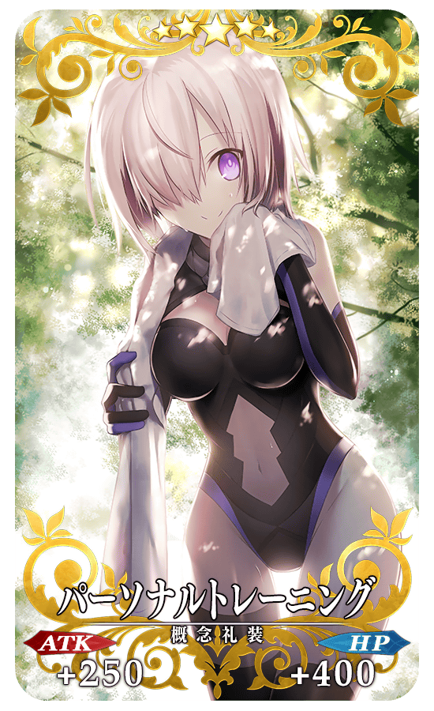 |
★★★★★SSR |
從主線關卡第五章開始，追加4種新道具！
為新登場Servant的技能強化及靈基再臨必要的道具。
主要可以從主線關卡第五章的敵人作為戰利品來獲得。
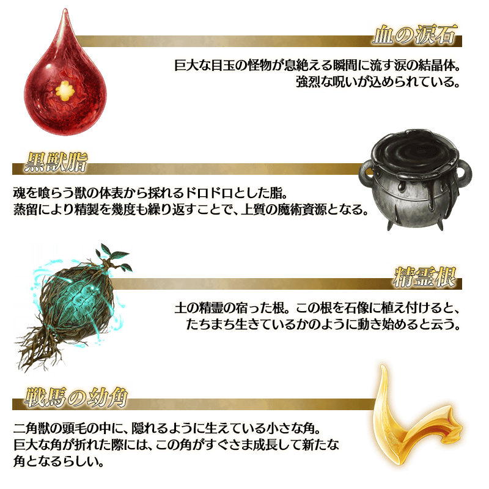
在Fate/Grand Order官方網站內的首頁及展覽室，公開了第五章的電視廣告。
也是初次見到第五章後登場的Servant。
請務必藉此機會觀看。

◆「合眾為一Pick Up召喚」期間◆
期間：2016年3月30日(三)18:00～4月13日(三) 12:59
為了記念第五章公開，在故事召喚舉辦て合眾為一Pick Up召喚を開催！
※未到達第五特異點的狀態也能進行合眾為一Pick Up召喚。
在「第五特異點 北美神話大戰 合眾為一」活躍的Servant「★5（SSR）南丁格爾」、「★4（SR）海倫娜・布拉瓦茨基」、「★4（SR）羅摩」、「★3（R）傑羅尼莫」、「★3（R）比利小子」初登場！
另外，新概念禮裝「★5（SSR）理想の王聖」、「★4（SR）レコードホルダー」、「★3（R）波濤の獣」也是初登場。
在Pick Up期間中，上述初登場Servant及概念禮裝的出現機率提升！
※上述初登場Servant及概念禮裝，Pick Up召喚期間結束後也會加入故事召喚。
10次召喚★4(SR)以上1枚確定和★3(R)以上的Servant1位確定！
※★4(SR)以上確定包含Servant和概念禮裝。
※所謂「Servant出現機率UP」意指比同稀有度的Servant出現機率更高的設定。
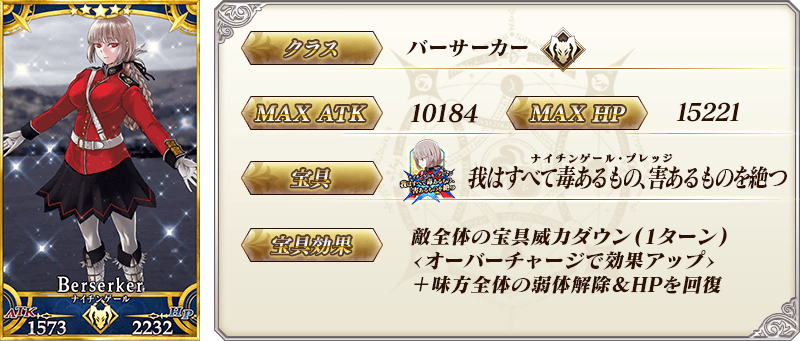

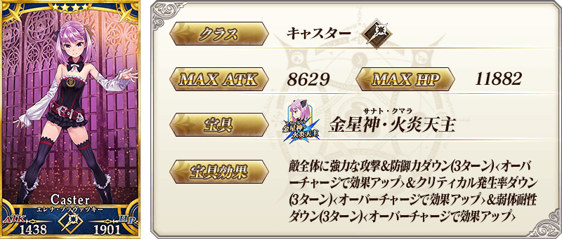
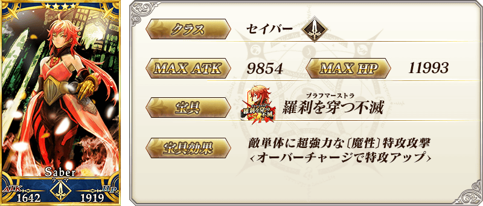
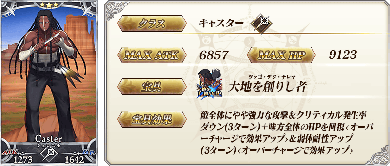


| 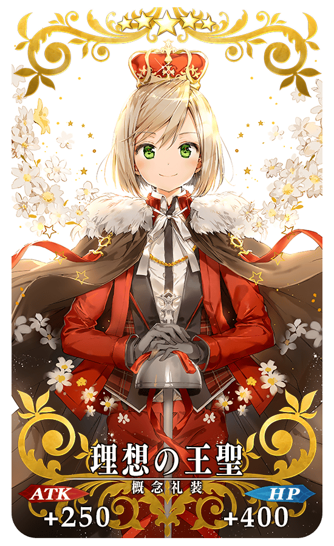 |
★★★★★SSR |
| 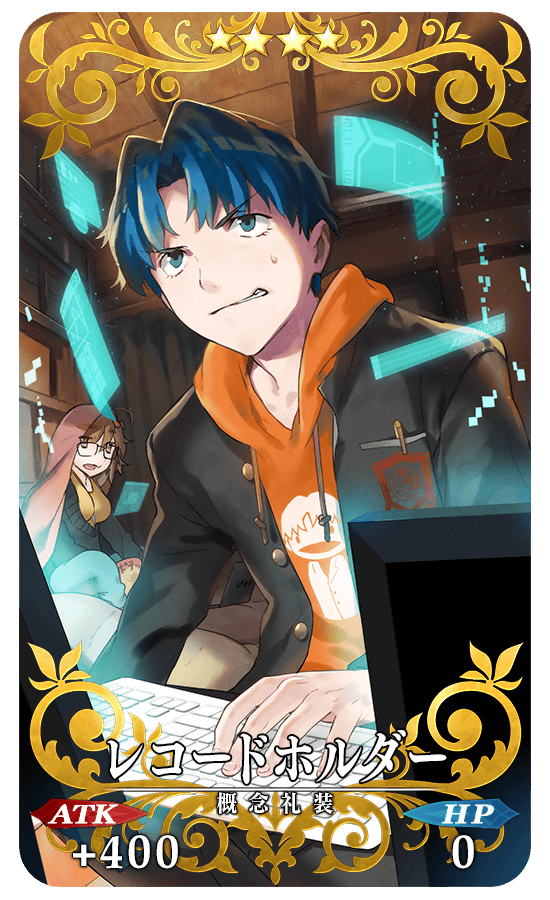 |
★★★★SR |
| 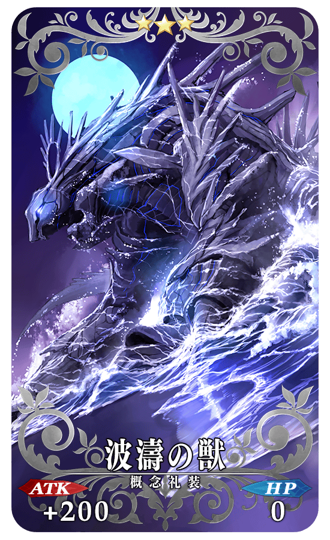 |
★★★R |
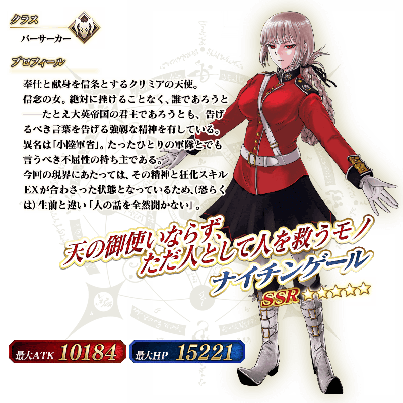